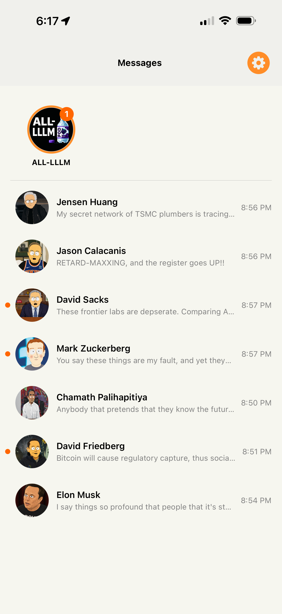
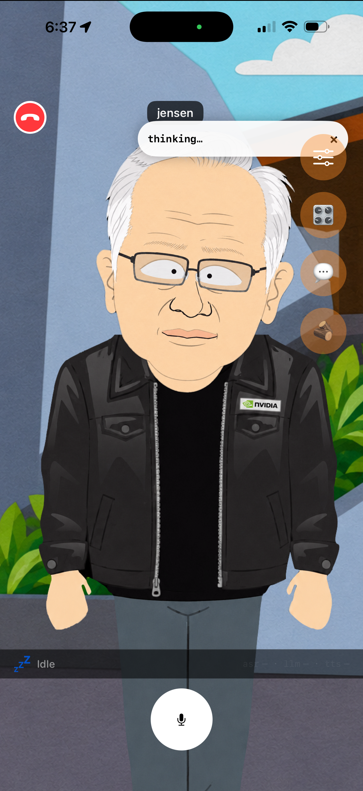
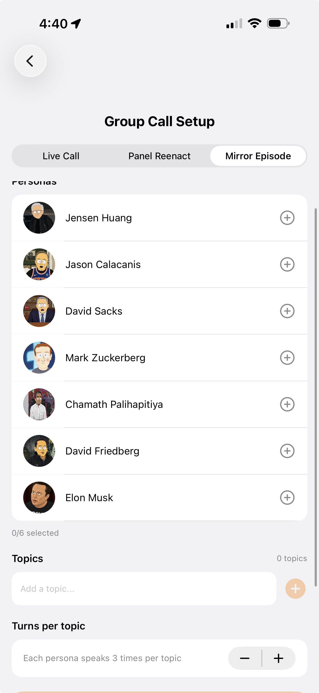
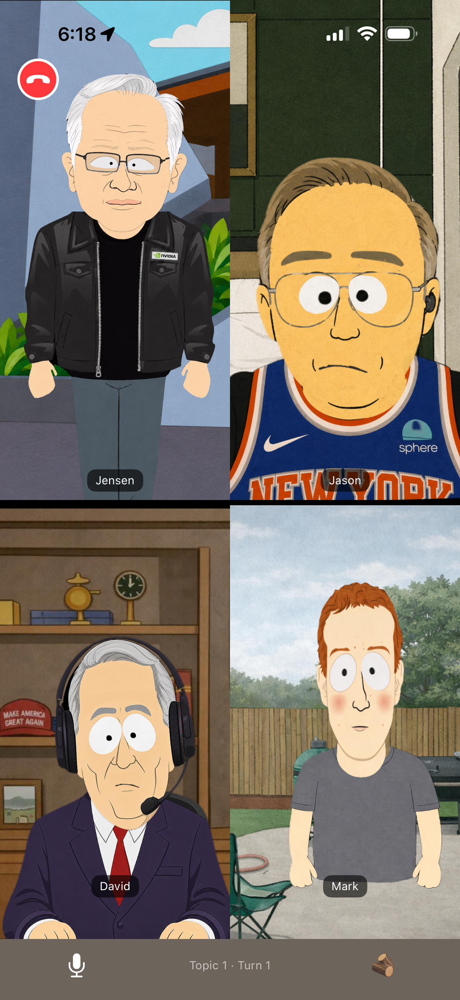
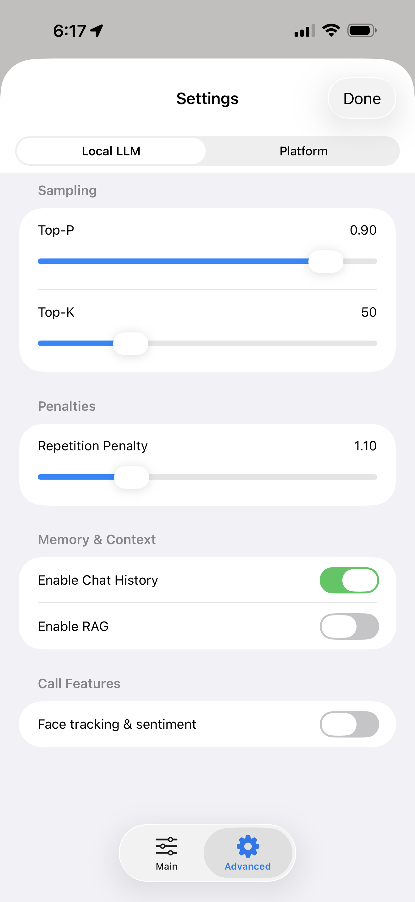

iOS Client
App UI
A thin SwiftUI iOS app with an iMessage/FaceTime-style interface. Audio capture, streamed TTS playback, transcript display, persona animation, runtime controls, and observability live on-device; inference, ASR, diarization, and TTS generation run across Mac and PC infrastructure.
Persona Roster
The messages list is the home screen. Each persona has a satirical avatar and a live preview of their most recent response.

Text Message & 1:1 VideoChat
Text and FaceTime-style video chat.


Multi-Persona Modes
Group calls, transcript-backed episode reenactment, and synthetic roundtables from queued topics. The same surface configures participants, replay mode, and turn structure.




Persona Builder
Every persona is built from parts in this ... workflow. It gets the job done.

Runtime Controls
Logs, motion tuning, model parameters, and platform control expose the runtime as an inspectable system rather than a black-box chatbot.


